Home › Client Onboarding › Calendly Automation: Create an Onboarding Checklist and Notify Your Team Instantly
Calendly Automation: Create an Onboarding Checklist and Notify Your Team Instantly
·⏱ 9 min read·Client Onboarding
Someone books a call through your Calendly link. Then nothing happens — no checklist, no team alert, no preparation. You show up to the call scrambling for context. This Make.com Calendly automation tutorial triggers the moment someone books: their details land in a Google Sheet as an onboarding checklist, and your team gets a Slack notification instantly. No code, no manual work, runs forever once set up.
Why Manual Booking Follow-Up Costs You Clients
Every Calendly booking is a potential client signaling interest — and the window between booking and the actual call is where most freelancers and agencies drop the ball. Without a system, nobody prepares materials, nobody reviews the prospect's background, and the call starts cold. The result: you look disorganized, the prospect feels like a number, and your close rate suffers. The fix takes 25 minutes to build and handles every booking automatically from that point forward.
Doesn't Calendly Already Have Built-In Automations?
Yes — Calendly has a "Workflows" feature that can send automatic emails and SMS messages before and after meetings. It's useful for basic reminders and follow-ups. But it has real limitations that matter for onboarding. Calendly Workflows can only send emails and SMS — there's no way to create a Google Sheet row, build a checklist, or notify your team in Slack. The messages are Calendly-branded templates with limited customization. And there's no central tracker where your team can see all upcoming bookings with preparation status. If all you need is a reminder email, Calendly Workflows work fine. But if you want a structured onboarding process — checklist, team alerts, centralized tracking — you need Make.com to connect the tools Calendly can't reach.
Why Use Make.com for Calendly Automation
Make.com connects Calendly to 3,000+ apps with a visual drag-and-drop builder — no code required. For this workflow, the key advantages over doing it manually or using Zapier are clear. Pricing: Make.com's free plan includes 1,000 operations per month. This scenario uses 4 operations per booking, covering 250 bookings monthly at zero cost. On Zapier, the same workflow would require the $49/month Professional plan within weeks. Visual builder: Make.com shows you exactly how data flows between Calendly, Google Sheets, and Slack. When something breaks, you can see where and fix it in seconds. Flexibility: need to add a step later — like sending a welcome email or creating a Google Drive folder? Just click + and add a module. The scenario grows with your business.
What This Automation Does
When someone books a meeting through Calendly, Make.com catches the event instantly and runs three actions: it fetches the full event details, adds a new row to your Google Sheet with the invitee's name, email, event type, scheduled time, and a pre-built onboarding checklist — then sends a Slack message to your team channel so someone can start preparing immediately.
You can build this entire automation using Make.com's free plan in about 25 minutes — no credit card required. Start free on Make.com →
What Gets Captured Automatically
Field
Google Sheets Column
Example Value
Invitee Name
A: Name
Sarah Johnson
Invitee Email
B: Email
sarah@company.com
Event Type
C: Event Type
Discovery Call
Scheduled Date & Time
D: Date & Time
2026-02-26 15:30
Status
E: Status
New
Onboarding Tasks
F: Onboarding Tasks
Send welcome email, Prepare docs, Assign team member
Don't Use Slack? Alternatives That Work the Same Way
This guide uses Slack for team notifications, but Make.com supports any messaging tool. If your team doesn't use Slack, swap the last module for one of these — the rest of the workflow stays identical. Gmail: send a notification email to your team instead. Microsoft Teams: same concept as Slack, select the Teams module and pick your channel. Google Chat: if you're already in Google Workspace, this is the simplest swap.
How to Build the Calendly Onboarding Automation
Create a free Make.com account — no credit card required. Click "Create a new scenario" on your dashboard.
Click the large + button on the canvas and search for "Calendly" — you'll see it listed as a verified integration with several module options. Select "Watch Events" as your trigger.
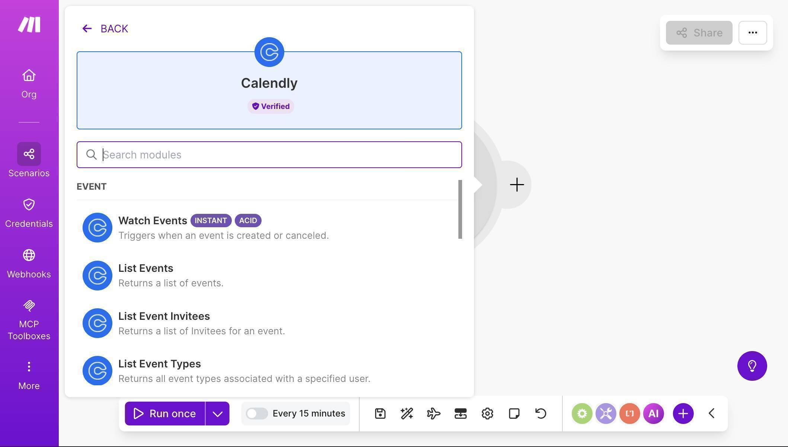Calendly module picker — select Watch Events as the trigger
Click "Create a webhook" — Make.com will open a configuration dialog. Name your webhook (e.g. "My Calendly Event webhook") and click "Create a connection" to link your Calendly account.
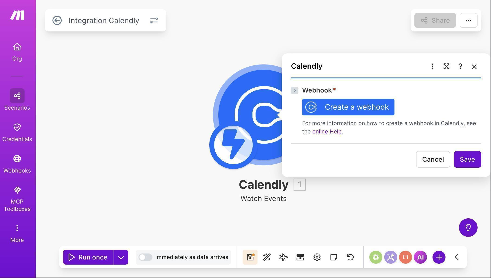Calendly Watch Events module with Create a webhook button
Once your Calendly connection is established, you'll see the webhook configuration. Click "Create a connection" and authorize Make.com to access your Calendly account through OAuth.
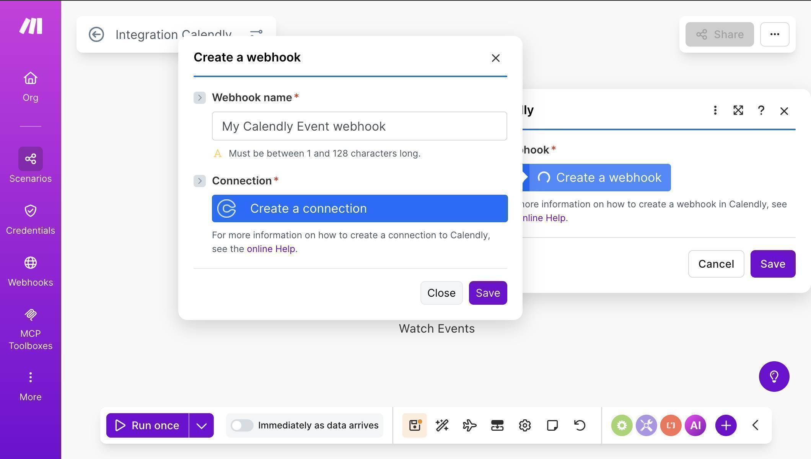Webhook creation dialog — Create a connection to link your Calendly account
After connecting, configure the webhook: check "Invitee Created" under Events (this triggers when someone books a meeting). Select your Organization URI from the dropdown — this tells Make.com which Calendly account to watch.
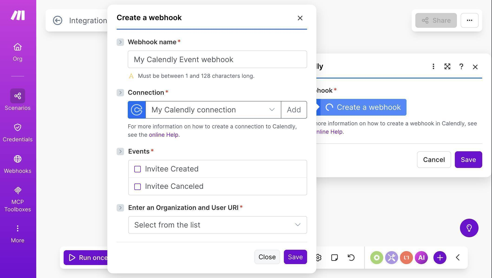Webhook configuration — Connection established, Events and Organization URI fields visible
Webhook configured — Invitee Created checked and Organization URI selected
Add a second Calendly module — click the + button to the right of Watch Events and search for Calendly again. Select "Get an Event." This module fetches the full event details including the scheduled start time, which the Watch Events trigger doesn't include. Map the Event field from the trigger to the Event URI input.
Add a Google Sheets module — click the + button after the Get an Event module, search for "Google Sheets" and select "Add a Row."
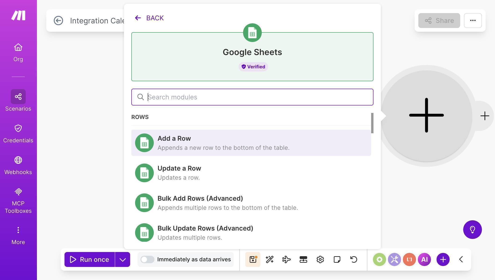Google Sheets module picker — select Add a Row
Connect your Google account, set Search Method to "Search by path", select My Drive, and choose your "Calendly Onboarding Tracker" spreadsheet.
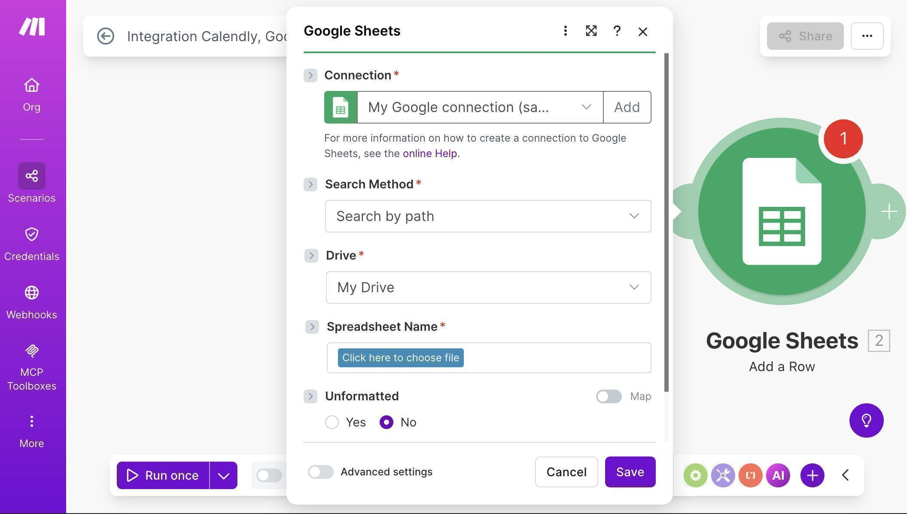Google Sheets connection — Search by path, My Drive, click to choose spreadsheet
Map the fields from Calendly to your Google Sheet columns — Name from the Watch Events module maps to column A, Email to column B, Event to column C, Start Time from the Get an Event module to column D. Type "New" manually in the Status field and "Send welcome email, Prepare docs, Assign team member" in the Onboarding Tasks field.
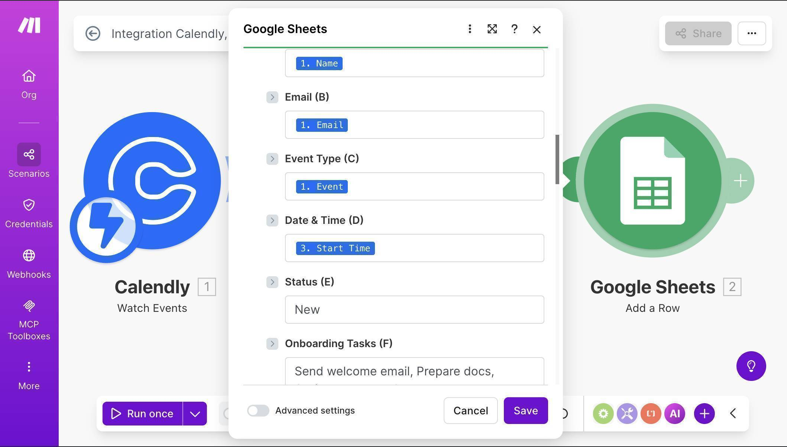Field mapping — Calendly data mapped to Google Sheets columns with static onboarding tasks
💡 Pro Tip: The Watch Events trigger provides basic invitee data (Name, Email, Event URI), but Start Time comes from the Get an Event module. That's why we need both Calendly modules — the trigger catches the booking, and Get an Event fetches the scheduling details.
10. Add a Slack module — click the + button after Google Sheets, search for "Slack" and select "Send a Message."
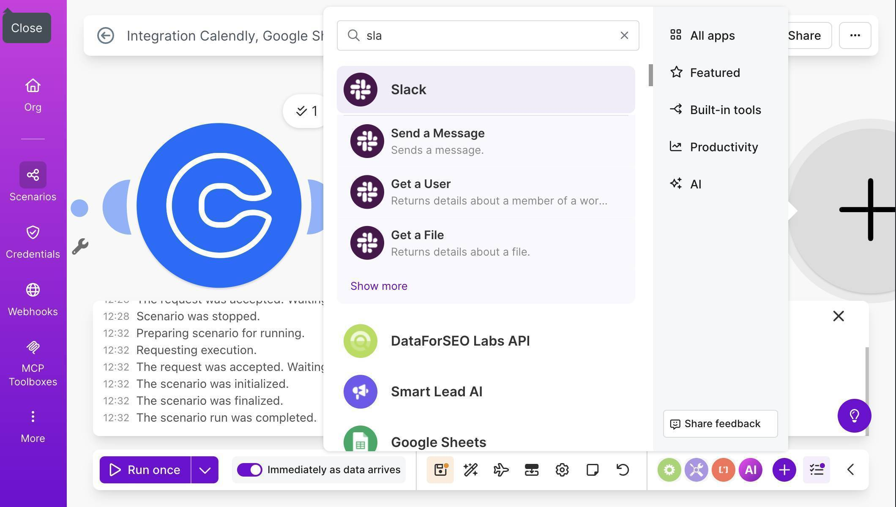Module picker showing Slack — select Send a Message
11. Click "Create a connection" to link your Slack workspace. Authorize Make.com when prompted.
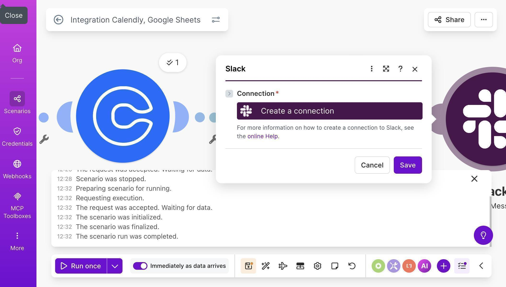Slack module — Create a connection to authorize your workspace
12. Configure the Slack message — select your channel (e.g. #all-new-bookings), set Channel type to "Public channel", and compose your notification message.
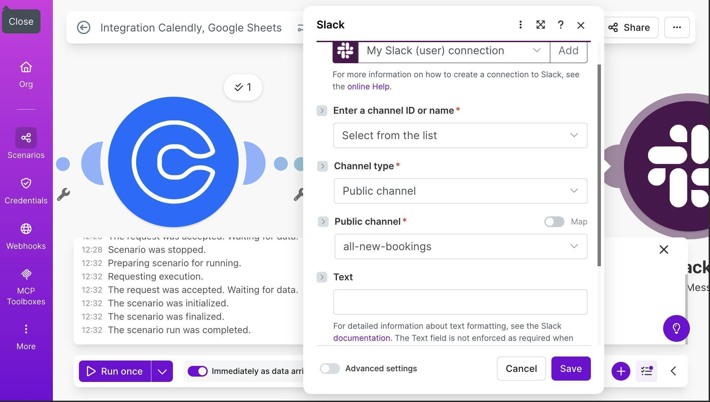Slack configuration — channel set to all-new-bookings, Public channel type, Text field ready
13. Write the Slack notification text using mapped fields — include the invitee name, email, event type, and start time. Add a link to your Google Sheet so your team can check the onboarding tracker immediately.
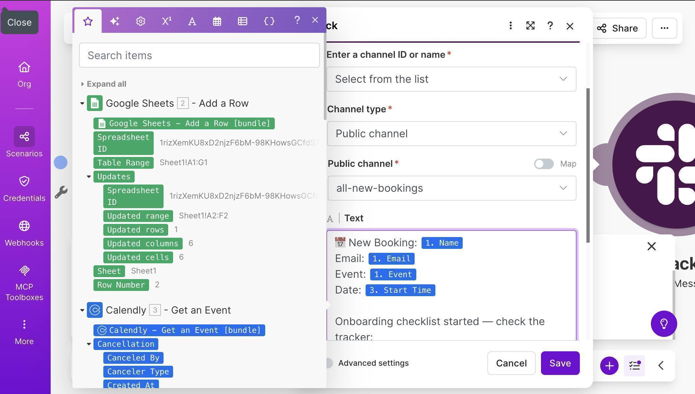Slack message body with mapped fields — New Booking notification with Name, Email, Event, Date and tracker link
14. Save the scenario and click "Run once" — then book a test meeting through your own Calendly link using an incognito browser window. Make.com will process the event and populate your Google Sheet automatically.
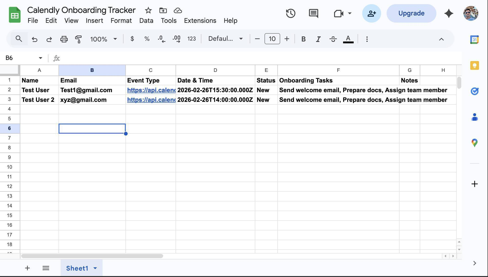Google Sheet populated with test booking data — Name, Email, Event Type, Date, Status and Onboarding Tasks
15. Check your Slack channel — the notification arrives within seconds of the booking, with all the details your team needs to start preparing.
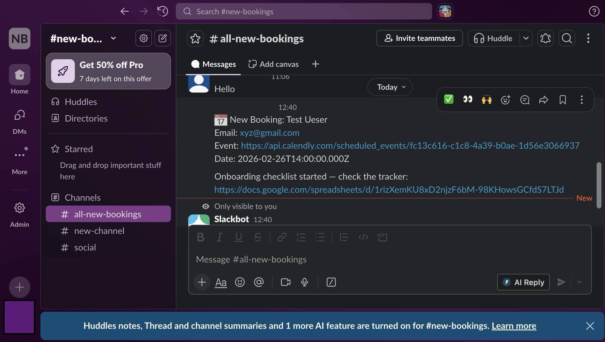Slack notification received in #all-new-bookings channel with booking details and tracker link
16. Your completed scenario should show four connected modules: Calendly Watch Events → Calendly Get an Event → Google Sheets Add a Row → Slack Send a Message. Toggle the scenario ON to run it automatically for every new booking.
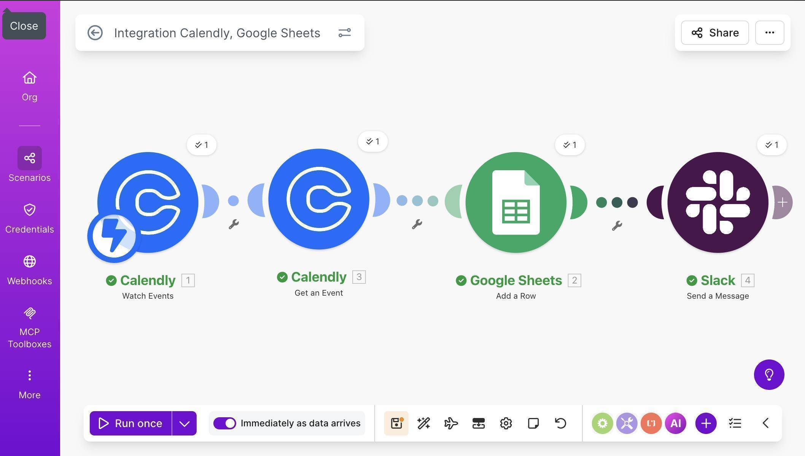Complete Make.com scenario — four modules connected and running successfully
💡 Pro Tip: The Event Type field currently shows a Calendly API URL instead of a human-readable name like "Discovery Call." To fix this, add a Calendly "Get an Event Type" module between Get an Event and Google Sheets — it converts the URI into the actual event type name. For most setups this is optional since you'll recognize your own event types, but it makes the Google Sheet cleaner.
Who Should Use This Automation
This workflow is built for anyone who uses Calendly for client-facing bookings and wants a structured preparation process. Freelancers using Calendly for discovery calls or project kickoffs. Agencies onboarding new clients through scheduled intake meetings. Consultants managing multiple bookings across different service types. Small business owners scheduling sales calls and demos. If you book more than 5 calls per week and prepare for each one manually, this automation pays for itself in time saved within the first week.
Apps Used in This Automation
This workflow connects four tools, all of which have free tiers. Calendly captures the booking and sends the event data. Make.com orchestrates the entire workflow — it's the engine that connects everything. Google Sheets stores the onboarding tracker with booking details and checklists. Slack delivers instant team notifications so someone can start preparing immediately.
Bottom line: If you're using Calendly for client bookings and still preparing for calls manually, you're wasting time on every single booking. Calendly's built-in Workflows can send reminder emails, but they can't build checklists, update spreadsheets, or alert your team in Slack. This automation captures every new booking in a structured Google Sheet with a pre-built checklist and alerts your team instantly. It takes about 25 minutes to build, costs nothing on Make.com's free plan (each run uses 4 operations — well within the 1,000 monthly limit), and runs automatically from that point forward.
Frequently Asked Questions
Does this work with Calendly's free plan?
Yes. Calendly's free plan supports webhook integrations through Make.com. You can use this automation with any Calendly tier.
What if someone cancels or reschedules their booking?
The Watch Events trigger supports both "Invitee Created" and "Invitee Cancelled" events. You can add a second scenario that updates the Google Sheet status to "Cancelled" when someone cancels — or handle both events in one scenario with a filter.
Why do I need the "Get an Event" module — can't Watch Events provide all the data?
Watch Events provides the invitee's name, email, and a reference to the event, but not the scheduled start time. The Get an Event module fetches the full event details including when the meeting is actually scheduled.
Can I customize the onboarding checklist for different event types?
Yes. Add a Make.com Router module after Get an Event — route different event types to different Google Sheets rows with customized task lists. For example, "Discovery Call" gets one checklist while "Onboarding Session" gets another.
Do I need a paid Make.com plan?
The free plan includes 1,000 operations per month. Each time this scenario runs, it uses 4 operations — one per module. That covers 250 bookings per month, more than enough for most freelancers and small agencies.